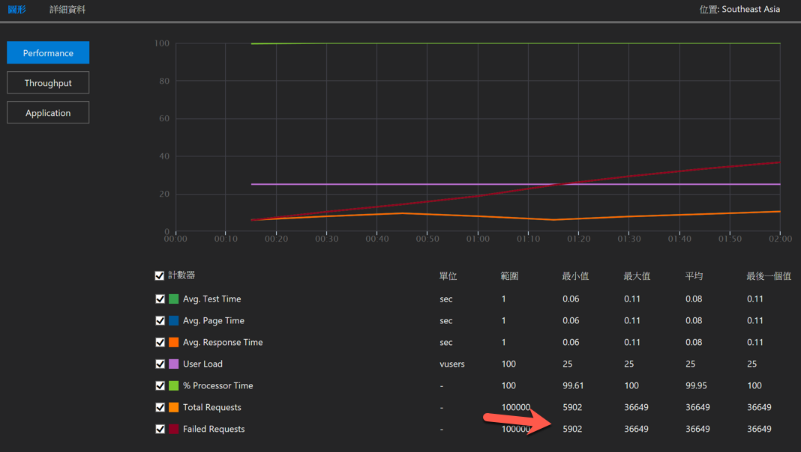
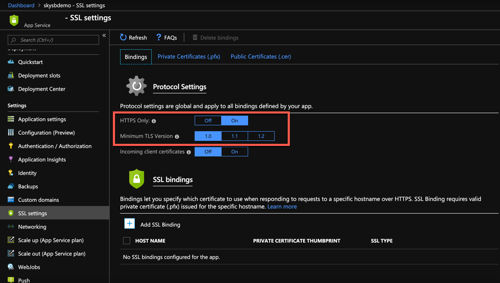

不重要的碎碎念
幾百年沒寫 Blog 了，上一篇文章已經一年前了 ( 遮臉 )，而沒寫文章的時間也收到很多 Fans (!?) 的鼓勵，都在詢問為啥沒更新 XDDD，但真的沒辦法，工作太忙了，也請大家多喔見諒 ( 好啦，是我偷懶… )
而最近因答應了某人，所以打算又開始執筆來寫一些東西，於是就誕生了這篇….
問題
這幾天因為專案需求，需要在 Azure App Service 的 Web App 使用 VS Load Test 測試一些東西：尤其是這幾天，每天都下雨的情況下，只好拿壓力測試工具來出氣，當興高采烈地按下去，然後悠哉地去泡一杯紅茶加牛奶，回來一看。

好吧，沒有吐血，也把紅茶和牛奶吐出來了，是的，竟然打了 36649 的 request，然後也錯了 36649 的 request，完全的 100%…原本是想拿來當出氣工具，結果壓力全部跑回到自己身上…
既然都錯了，而且打了兩三次都是同樣結果，那身為工程屍，只能去找錯了。
所以第一步當然就是點開錯誤資訊看一下

所以找到了第一個關鍵，An existing connection was forcibly closed by the remote host 。
啥，被中斷了，第一個想到的是，會不會是 Web App 爆了，實際點進去看，並且查看 Web App 的 CPU 等狀況：嗯，這根本不是好不好，而是根本沒打進去!!
好啦，也合理，因為正常情況下，應該也會打幾個成功的進去啊！！！！！
然後再去 Detail 檢查，也不是 500 錯誤，所以真的也沒進去。
好吧，既然如此，就去問一下 google 大神，看看是什麼問題….
解決方案
當然，歷經多年沒寫文章，這篇是小品，所以就直接講答案，其實查閱的結果，這就是個 bug，未來應該也是會修啦，有興趣的可以直接參考這篇。
而這篇的內容主要就是在說，因為現在 Web App 預設會使用 TLS 1.2，而這會影響到壓測工具，但文章沒詳細敘述原因就是了，而暫時解的方法，大概這幾種，然後就開始吵，這個到底算不算 Bug….
- 使用 Plung 掛上 TLS 1.2 的支援
- 關閉 Https only，然後打 Http
- 將 TLS 1.2 降到 1.0
1 的方案小弟沒試過，因為想說未來應該會自己改完這 Bug XDD
2 的方案不是很喜歡，因為打到 http 會在從新導向到 https..
3 至少對我來說，是可以接受的暫時解，所以小弟就選擇 3 來處理此問題。
想要修改的，可以到 Web App 的 SSL settings 進行設定，像下圖，我就把原本的 TLS 1.2 改成 1.0

完成之後，再重新打一次，就可以享受喝奶茶的樂趣了 (誤)
後記
好吧，我不確定未來會不會修復此問題，如果未來還是沒修復，小弟可能會在想怎麼解決吧….